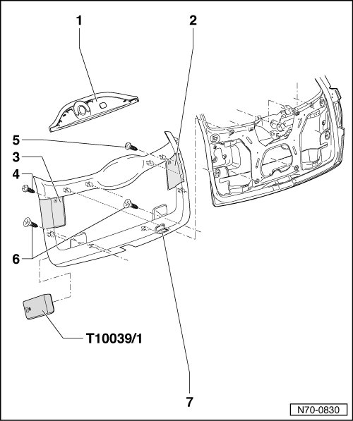
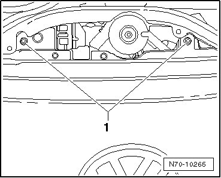

Lower Tailgate Trim
Lower Tailgate Trim
Removing
- Switch off ignition.
- Open rear window and pull wiper motor trim - 1 - out of mountings.

- Remove the two bolts - 1 -.

- Remove service covers - 2 - and - 3 - from tailgate trim.
- Remove screws - 4 - and - 5 - from behind service covers..
- Remove the two bolts - 6 - in the grip depression.
- Slide wedge (T10039/1) between trim and tailgate.
- Pry trim out of mountings in tailgate. Start from lower edge of tailgate.
- Separate wiring harness from interior light - 7 -.
Installing
- Perform the steps used for removal in reverse order.
• Before installing, check securing clips for damage and replace if necessary.